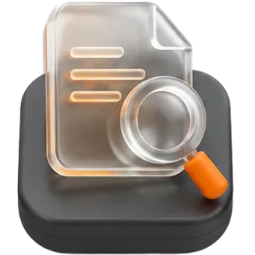
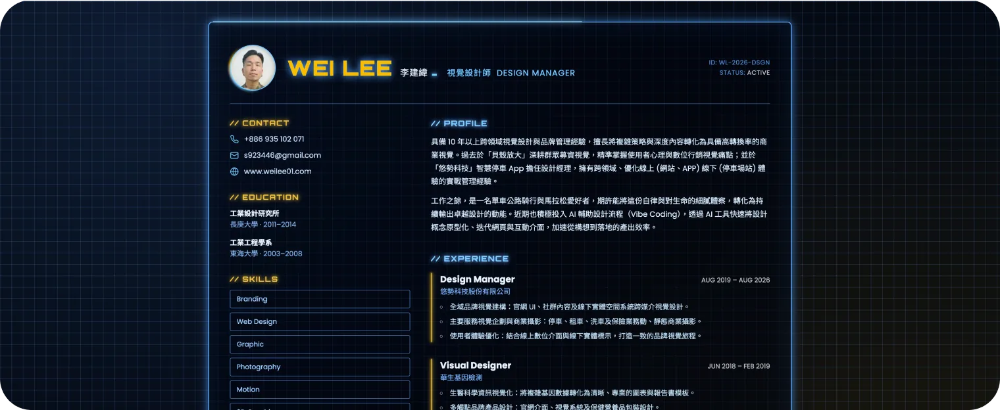
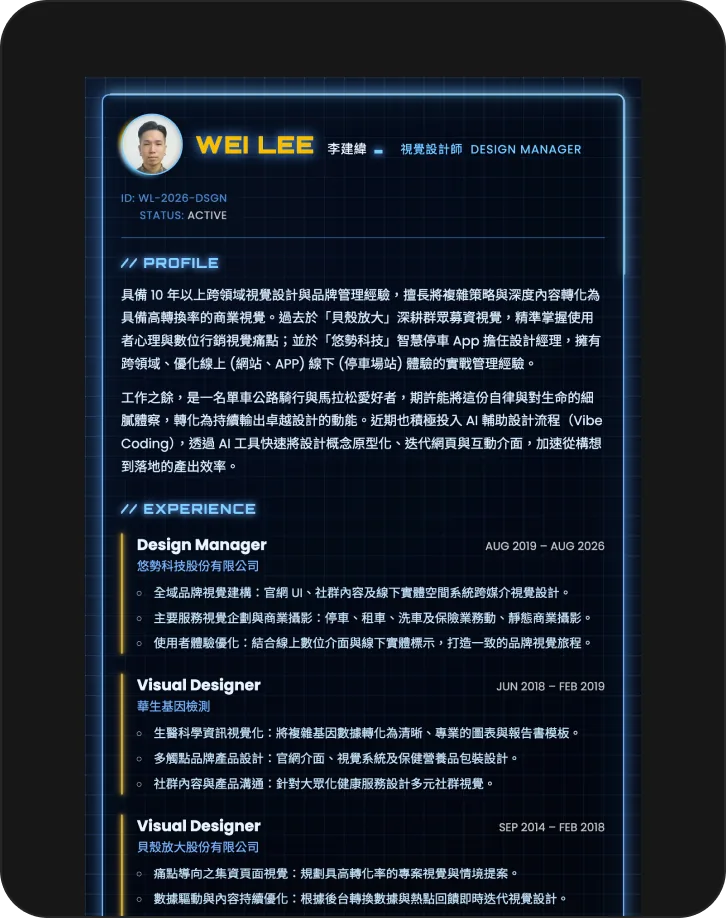
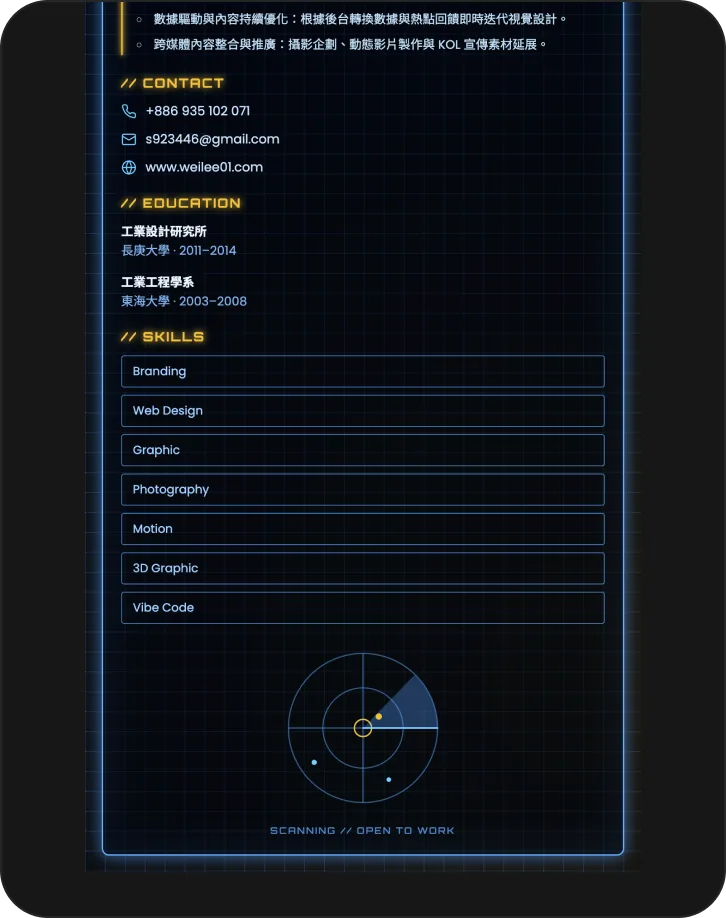

Digital Resume
Resume · Motion Visual

類型AI · 動態履歷
使用工具

Problem
傳統履歷多以純文字條列呈現，雖然資訊完整，卻缺乏個人特色與視覺記憶點。我想讓自己的履歷不只是被「閱讀」，同時也能被當作一件作品來「欣賞」，透過加入動態視覺效果，讓履歷在眾多文字排版的求職文件中更有辨識度。


Process
我先用個人大頭照作為參考，透過 Adobe Firefly 生成頭像動態影片，作為履歷視覺的核心元素。接著採用 vibe coding 的方式，與 Claude Code 持續來回調整排版結構、整體配色，並加入發光、閃爍等動態效果，反覆微調細節直到畫面呈現符合預期的質感與節奏。
Result
完成後的 Digital Resume 不再是單純的文字文件，而是結合動態影像與視覺效果的互動式作品，頭像的呼吸感動態與光效讓整體頁面更有生命力，也讓履歷本身多了一層設計作品的展示價值。
Reflection
這個小專案讓我體會到，即使是履歷這種看似制式的文件，也能透過 AI 生成素材與 vibe coding 的方式，快速將想法落地成有溫度、有質感的成品。整個過程也讓我更熟悉如何與 Claude Code 溝通、迭代排版與動態效果的細節，這種快速試錯、持續調整的節奏，對日後處理其他視覺化或互動類型的專案都很有幫助。